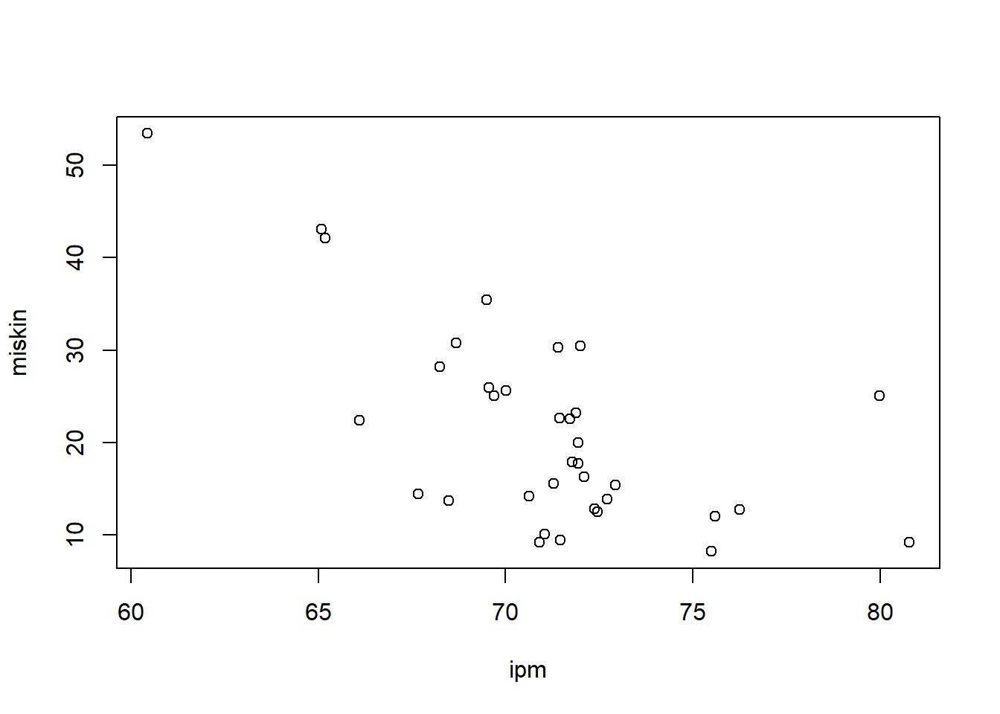

setwd('C:/Users/User/Documents/Kuliah Sem. 3/Metodologi Penelitian/tugasmetopel')
library('readxl')
library('writexl')
dat<-read_excel('nisa.xlsx')Pengaruh Indeks Pembangunan Manusia Terhadap Kemiskinan di Indonesia Pada Tahun 2020
Metode Penelitian Politeknik APP Jakarta
1 Pendahuluan
1.1 Latar belakang
Kemiskinan merupakan kondisi di mana seseorang atau sekelompok orang tidak mampu memenuhi hak- hak dasarnya untuk mempertahankan dan mengembangkan kehidupan yang bermartabat. Kemiskinan juga biasa disebut sebagai kesenjangan sosial yang terjadi di lapisan masyarakat. Kemiskinan terjadi di setiap negara baik di negara maju maupun negara berkembang. Indonesia merupakan negara berkembang, dilansir data dari BPS penduduk miskin Indonesia bertambah menjadi 27,55 juta per September 2020. Pandemi Covid-19 memberikan dampak besar terhadap peningkatan angka kemiskinan di Indonesia. Per September 2020, tingkat kemiskinan Indonesia meningkat menjadi 2 digit, yaitu dari 9,22% pada September 2019 menjadi 10,19%.
Maka dari itu, perlu ditingkatkan lagi dalam indikator Indeks Pembangunan Manusia (IPM) supaya mengurangi angka kemiskinan. Indeks Pembangunan Manusia mengukur pembangunan suatu daerah melalui beberapa faktor, yaitu umur panjang dan sehat yang ditinjau dari segi kesehatan; angka harapan sekolah, partisipasi sekolah, dan rata-rata lamanya bersekolah untuk mengukur kinerja pembangunan apabila dilihat dari segi pendidikan; dan kemampuan masyarakat untuk membeli sejumlah kebutuhan pokok dalam memenuhi kebutuhan sehari-hari ditinjau dari segi rata-rata besarnya pengeluaran perkapita. Oleh karena itu IPM mempengaruhi tingkat kemiskinan.
Indeks Pembangunan Manusia (IPM) ditetapkan sebagai salah satu ukuran utama yang dicantumkan dalam pola dasar mencapai kesejahteraan. Hal ini menandakan bahwa IPM menduduki satu posisi penting dalam manajemen pengembangan. Fungsi IPM dan indikator pembangunan manusia lainnya akan menjadi kunci bagi terlaksananya perencanaan dan pembangunan yang terarah. IPM yang merupakan tolak ukur pembangunan suatu wilayah sebaiknya berkorelasi positif terhadap kondisi kemiskinan di Indonesia karena diharapkan memiliki IPM tinggi, idealnya kualitas hidup masyarakat juga tinggi atau dapat dikatakan pula bahwa jika nilai IPM tinggi, maka seharusnya tingkat kemiskinan masyarakat akan rendah.
1.2 Ruang lingkup
Ruang lingkup suatu masalah digunakan untuk menghindari adanya penyimpangan maupun pelebaran pokok masalah agar penelitian ini lebih terarah dan memudahkan dalam pembahasan sehingga tujuan penelitian akan tercapai. Beberapa ruang lingkup dalam penelitian ini adalah sebagai berikut: Ruang lingkup hanya meliputi informasi seputar kemiskinan dan indeks pembangunan manusia. Informasi yang disajikan yaitu: kemiskinan di Indonesia, Indeks Pembangunan Manusia di Indonesia dan keterkaitan antara IPM dengan kemiskinan.
1.3 Rumusan masalah
- Bagaimana tingkat Indeks Pembangunan Manusia di setiap provinsi di Indonesia pada tahun 2020?
- Bagaimana tingkat kemiskinan di setiap provinsi di Indonesia pada tahun 2020?
- Apakah ada keterkaitan antara IPM dengan kemiskinan?
1.4 Tujuan dan manfaat penelitian
Tujuan dari penelitian ini adalah untuk menganalisis bagaimana dan berapa besar pengaruh indeks pembangunan manusia terhadap kemiskinan di Indonesia pada tahun 2020.
Manfaat yang dapat diperoleh dari penelitian ini adalah :
Bagi pengguna
Memberikan informasi mengenai pengaruh indeks pembangunan manusia terhadap kemiskinan di Indonesia pada tahun 2020.
Bagi peneliti
Manfaat yang didapat bagi peneliti adalah mengimplementasikan ilmu yang sudah dipelajari di perkuliahan.
1.5 Package
Packages yang penulis gunakan untuk meregresi data antara lain sebagai berikut:
2 Studi pustaka
Kemiskinan didefinisikan sebagai standar hidup yang rendah, yaitu adanya suatu tingkat kekurangan materi dibandingkan dengan standar kehidupan yang umum berlaku dalam masyarakat yang bersangkutan. Secara ekonomis, kemiskinan juga dapat diartikan sebagai kekurangan sumber daya yang dapat digunakan untuk meningkatkan kesejahtaraan sekelompok orang. Kemiskinan memberi gambaran situasi serba kekurangan seperti terbatasnya modal yang dimiliki, rendahnya pengetahuan dan keterampilan, rendahnya produktivitas, rendahnya pendapatan, lemahnya nilai tukar hasil produksi orang miskin dan terbatasnya kesempatan berperan serta dalam pembangunan. Kemiskinan sebagai kondisi di mana seseorang atau sekelompok orang, laki-laki dan perempuan, tidak mampu memenuhi hak-hak dasarnya untuk mempertahankan dan mengembangkan kehidupan yang bermartabat (Bappenas, 2004). Hak-hak dasar tersebut antara lain, terpenuhinya kebutuhan pangan, kesehatan, pendidikan, pekerjaan, perumahan, air bersih, pertanahan, sumber daya alam dan lingkungan hidup, rasa aman dari perlakuan atau ancaman tindak kekerasan dan hak untuk berpartisipasi dalam lingkungan sosial.
Kemiskinan merupakan salah satu persoalan mendasar, karena kemiskinan menyangkut pemenuhan kebutuhan yang paling mendasar dalam kehidupan dan kemiskinan merupakan masalah global karena kemiskinan merupakan masalah yang dihadapi banyak negara (Yacoub, 2012). Kemiskinan disebabkan oleh keterbelakangan manusia dan sumber daya alam. Pengelolaan sumber daya alam sangat tergantung kemampuan produktif manusia. Jika penduduknya banyak yang miskin dan berpendidikan rendah maka akan mengakibatkan langkanya keterampilan teknik, pengetahuan, dan aktivitas kewiraswataan yang secara otomatis akan menyebabkan sumber daya alam yang tersedia justru terbengkalai, tidak berkembang, atau bahkan salah guna. Sumber daya alam ini akan mempengaruhi tingkat pertumbuhan ekonomi. Di sisi lain, kurangnya sumber daya alam akan menyebabkan kemiskinan karena sumber daya alam adalah sumber utama kebutuhan hidup manusia. Kemiskinan sumber daya alam merupakan sebab dan sekaligus akibat kemiskinan manusia (Jhingan, 2016).
Menurut Badan Pusat Statistik (2007), Indeks Pembangunan Manusia (IPM) merupakan ukuran capaian pembangunan manusia berbasis sejumlah komponen dasar kualitas hidup. IPM menggambarkan beberapa komponen, yaitu capaian umur panjang dan sehat yang mewakili bidang kesehatan; angka melek huruf, partisipasi sekolah dan rata-rata lamanya bersekolah mengukur kinerja pembangunan bidang pendidikan, dan kemampuan daya beli masyarakat terhadap sejumlah kebutuhan pokok yang dilihat dari rata- rata besarnya pengeluaran per kapita. Pembangunan manusia merupakan tujuan pembangunan itu sendiri (Todaro, 2003). Yang mana pembangunan manusia memainkan tujuan peranan kunci dalam membentuk kemampuan sebuah negara dalam menyerap kemampuan sebuah negara dalam menyerap teknologi modern untuk membangun kapasitas agar tercipta pertumbuhan serta pembangunan yang berkelanjutan. Indeks pembangunan manusia memuat tiga dimensi penting dalam pembangunan yaitu dengan aspek pemenuhan kebutuhan akan hidup panjang umur (longevity), dan hidup sehat (healthy life), untuk mendapatkan pengetahuan (the knowledge) dan mempunyai akses kepada sumber daya yang bisa memenuhi standar hidup. Artinya tiga dimensi penting dalam pembangunan manusia tersebut sangat berpengaruh terhadap kemiskinan (Mulyaningsih, 2008).
3 Metode penelitian
3.1 Data
Data yang digunakan dalam penelitian adalah dua data yang menunjukkan tingkat Indeks Pembangunan Manusia (IPM) dan Kemiskinan di Indonesia pada tahun 2020. Data yang diambil yaitu data sekunder dari Badan Pusat Statistik (BPS) dan sumber lain yang terdiri dari jurnal.
| Provinsi | IPM | Kemiskinan |
|---|---|---|
| ACEH | 71.99 | 30,42 |
| SUMATERA UTARA | 71.77 | 17,89 |
| SUMATERA BARAT | 72,38 | 12,84 |
| RIAU | 72,71 | 13,86 |
| JAMBI | 71,29 | 15,55 |
| SUMATERA SELATAN | 70,01 | 25,64 |
| BENGKULU | 71,40 | 30,33 |
| LAMPUNG | 69,69 | 25,1 |
| KEP. BANGKA BELITUNG | 71.47 | 9,42 |
| KEP. RIAU | 75,59 | 12,05 |
| DKI JAKARTA | 80,77 | 9,22 |
| JAWA BARAT | 72,09 | 16,31 |
| JAWA TENGAH | 71,87 | 23,25 |
| DI YOGYAKARTA | 79,97 | 25,08 |
| JAWA TIMUR | 71,71 | 22,55 |
| BANTEN | 72,45 | 12,55 |
| BALI | 75,50 | 8,23 |
| NUSA TENGGARA BARAT | 68,25 | 28,2 |
| NUSA TENGGARA TIMUR | 65,19 | 42,11 |
| KALIMANTAN BARAT | 67,66 | 14,41 |
| KALIMANTAN TENGAH | 71,05 | 10,08 |
| KALIMANTAN SELATAN | 70,91 | 9,21 |
| KALIMANTAN TIMUR | 76,24 | 12,74 |
| KALIMANTAN UTARA | 70,63 | 14,21 |
| SULAWESI UTARA | 72.93 | 15,4 |
| SULAWESI TENGAH | 69,55 | 25,98 |
| SULAWESI SELATAN | 71,93 | 17,71 |
| SULAWESI TENGGARA | 71,45 | 22,69 |
| GORONTALO | 68,68 | 30,81 |
| SULAWESI BARAT | 66,11 | 22,37 |
| MALUKU | 69,49 | 35,43 |
| MALUKU UTARA | 68,49 | 13,75 |
| PAPUA BARAT | 65,09 | 43,07 |
| PAPUA | 60,44 | 53,44 |
| INDONESIA | 71,94 | 19,97 |
3.2

plot(dat$ipm,dat$miskin,xlab="ipm",ylab="miskin")
3.3 Metode analisis
Metode yang dipilih adalah regresi univariat atau Ordinary Least Square (OLS) dengan 2 variabel independen. Penelitian ini merbaksud mencari hubungan antara Indeks Pembangunan Manusia (IPM) dan Kemiskinan. Spesifikasi yang dilakukan adalah:
\[ y_{t}=\beta_0 + \beta_1 x_t+\mu_t \] di mana \(y_t\) adalah IPM dan \(x_t\) adalah Kemiskinan.
4 Pembahasan
4.1 Pembahasan masalah
Manusia menjadi salah satu faktor penentu arah suatu pembangunan di suatu daerah. Untuk itu diperlukan sumber daya manusia yang berkualitas agar tercipta Sumber Daya Manusia (SDM) yang bisa bersaing di masa saat ini dan masa depan nanti. Pembangunan manusia menjadi persoalan penting untuk ditingkatkan karena modal manusia menjadi faktor penentu kesejahteraan hidup dan percepatan pembangunan daerah. Oleh karenanya IPM sering dikaitkan dengan kemiskinan (Napitupulu, 2007). Secara umum IPM berhubungan negatif dengan tingkat kemiskinan. Artinya semakin tinggi IPM penduduk maka semakin rendah tingkat kemiskinan.
Oleh karena itu, penelitian ini menggunakan metode OLS, maka penulis hanya menghubungkan tingkat Indeks Pembangunan Manusia dengan nilai Kemiskinan di Indonesia pada tahun 2020.
library(readxl)
dat<-read_excel('nisa.xlsx')
head(dat)# A tibble: 6 × 3
Provinsi ipm miskin
<chr> <chr> <dbl>
1 ACEH 71.99 30.4
2 SUMATERA UTARA 71.77 17.9
3 SUMATERA BARAT 72.38 12.8
4 RIAU 72.71 13.9
5 JAMBI 71.29 15.6
6 SUMATERA SELATAN 70.01 25.64.2 Analisis masalah
Dapat dilihat dari tabel di bawah ini adalah hasil regresi.
library(readxl)
dat<-read_excel('nisa.xlsx')
reg1<-lm(ipm~miskin,data=dat)
summary(reg1)
Call:
lm(formula = ipm ~ miskin, data = dat)
Residuals:
Min 1Q Median 3Q Max
-5.0344 -1.1765 -0.1596 1.0835 9.7739
Coefficients:
Estimate Std. Error t value Pr(>|t|)
(Intercept) 76.06854 1.12581 67.568 < 2e-16 ***
miskin -0.23415 0.04756 -4.923 2.31e-05 ***
---
Signif. codes: 0 '***' 0.001 '**' 0.01 '*' 0.05 '.' 0.1 ' ' 1
Residual standard error: 2.965 on 33 degrees of freedom
Multiple R-squared: 0.4235, Adjusted R-squared: 0.406
F-statistic: 24.24 on 1 and 33 DF, p-value: 2.313e-05#| echo: true
plot(dat$ipm,dat$miskin,xlab="ipm",ylab="miskin") # plot error vs Y5 Kesimpulan
Data dari perhitungan hasil regresi menunjukkan bahwa setiap 1% kenaikan dari Indeks Pembangunan Manusia sejalan dengan 23,415% penurunan kemiskinan di Indonesia pada tahun 2020. Dari hasil regresi tersebut dapat disimpulkan bahwa Indeks Pembangunan Manusia berpengaruh signifikan terhadap kemiskinan di Indonesia pada tahun 2020. Hal ini dikarenakan semakin tinggi angka Indeks Pembangunan Manusia maka semakin rendah tingkat kemiskinan.
6 Saran
Berdasarkan hasil penelitian yang dilakukan, dapat disampaikan saran bagi pemerintah. Adapun usaha yang perlu dilakukan yaitu perlunya usaha dalam meningkatan Indeks Pembangunan Manusia di Indonesia. Ada beberapa cara yang bisa dilakukan pemerintah dalam meningkatkan IPM di antaranya yaitu, memperbaiki sarana kesehatan dan mendorong masyarakat untuk selalu mengonsumsi makanan bergizi, pembangunan sekolah unggulan di daerah kota sampai pedalaman, serta memperbarui sistem pendidikan.
7 Referensi
Badan Perencanaan Pembangunan Nasional. (2004). Teori Kemiskinan.
Badan Pusat Statistik. (2020). Indeks Pembangunan Manusia Tahun 2020. Jakarta: Badan Pusat Statistik. ISSN: 2086-2369.
Badan Pusat Statistik. (2020). Total Kemiskinan Menurut Provinsi Tahun 2020. Jakarta: Badan Pusat Statistik. ISSN: 2086-2369.
Jhingan, M. (2016). Ekonomi Pembangunan dan Perencanaan. Jakarta: Rajawali.
Napitupulu, A.S. (2007). Pengaruh Indikator Komposit IPM Terhadap Penurunan Jumlah Penduduk Miskin Di Sumatera Utara. Sumatera Utara : Universitas Sumatera Utara.
Todaro, Michael P, Stephen C Smith. (2006). Pembangunan Ekonomi Edisi Kesembilan Jilid 1. Jakarta : Penerbit Erlangga.
Yacoub, Y. (Oktober). Pengaruh Tingkat Pengangguran Terhadap Tingkat Kemiskinan Kabupaten/Kota di Povinsi Kalimantan Barat. 2012, 8 Nomor 3. http://riset.polnep.ac.id/bo/upload/penelitian/penerbitan_jurnal/06-eksos%204%20yarlina%20okt12.pdf